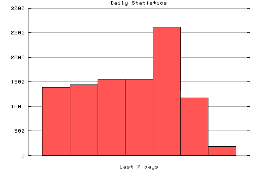

HTTP Server Daily Statistics
Covers: 10/23/95 to 10/29/95 (7 days).
All dates are in local time.
10/23/95 (Mon): 1395 : ################################################||### 10/24/95 (Tue): 1443 : ################################################||### 10/25/95 (Wed): 1561 : ################################################||### 10/26/95 (Thu): 1558 : ################################################||### 10/27/95 (Fri): 2619 : ################################################||### 10/28/95 (Sat): 1180 : ################################################||### 10/29/95 (Sun): 189 : ###################

Statistics generated at Sun Oct 29 08:32:21 MET 1995, (C) Oslonett AS, 1995.